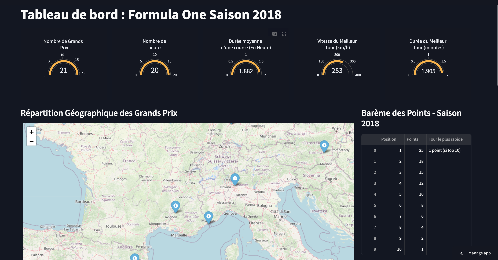
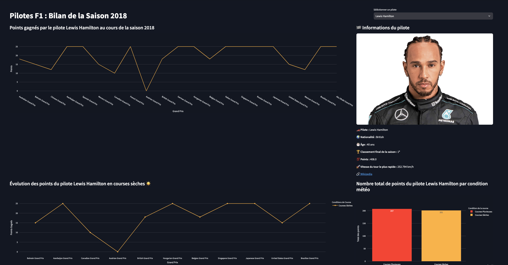
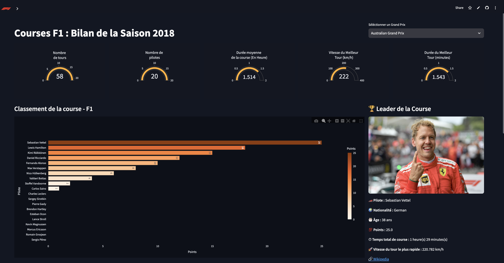
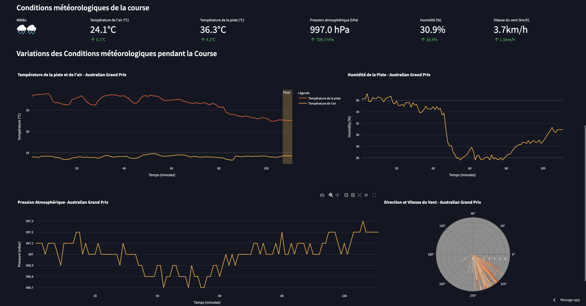

Project Highlights
Executive Summary
This case study investigates the statistical relationships between minute-by-minute weather parameters (air/track temperature, humidity, atmospheric pressure, wind dynamics) and Formula 1 racing performance across the 2018–2024 seasons (focusing specifically on the 21 Grands Prix of 2018). By unifying telemetry streams from the FastF1 API and historical data from the Ergast database, 2,216 minute-level weather records extracted for the 2018 deep-dive, processed, and deployed into an interactive 3-module Streamlit web dashboard featuring Plotly visual telemetry, Folium circuit maps, and polar WindRose dynamics.
Main Contributions
1. FastF1 Telemetry Mining
Automated minute-by-minute weather data extraction (air/track temp, pressure, humidity, wind) across 2018–2024 F1 sessions via FastF1 API.
2. Data Cleaning & Reconciliation
Merged Ergast historical CSV tables with FastF1 telemetry streams, resolving schema differences and harmonizing driver, race, and status identifiers.
3. Seasonal Data Processing
Engineered an automated seasonal data splitter creating lightweight CSVs (`Cleaned_Data_Saison/`) to optimize Streamlit app memory and loading speed.
4. Statistical Multivariate EDA
Conducted bivariate and multivariate EDA identifying statistical correlations between environmental metrics, incident rates, and engine failure thresholds.
5. Streamlit Dashboard Deployment
Built and deployed a 3-page interactive Streamlit dashboard featuring Plotly visual telemetry, Folium circuit maps, and polar WindRose dynamics.
Technical Stack
Dashboard Video Showcase
Problem Statement & Data Sources
In Formula 1, environmental variations (temperature, pressure, precipitation) influence tire operating windows, cooling efficiency, and accident frequency. Data was ingested from two complementary sources:
| Data Source | Data Type & Contents | Extracted Parameters | Scope |
|---|---|---|---|
| FastF1 API | Minute-by-minute weather & telemetry logs | AirTemp, TrackTemp, Humidity, Pressure, WindSpeed, WindDirection, Rainfall |
2018–2024 (2,216 records in 2018) |
| Ergast DB | Historical relational CSV database | circuits, drivers, races, results, status, lap_times |
Standings, status codes, lap times, coordinates |
Data Processing Pipeline
The data engineering and analysis pipeline transitions sequentially from raw API ingestion to web deployment:
| Pipeline Phase | Core Responsibilities | Primary Outputs |
|---|---|---|
| 1. Ingestion | API connection to FastF1, iterating across 2018–2024 sessions to harvest minute-level weather readings. | F1 Weather(2018 - 2024).csv |
| 2. Cleaning & Reconciliation | Imputation of missing values, datetime parsing, ID reconciliation between Ergast DB and FastF1 schemas. | meteo_cleaned.csv, resultat_cleaned.csv |
| 3. Seasonal Partitioning | Splitting master datasets into seasonal CSV subsets to optimize memory consumption and app response time. | Cleaned_Data_Saison/Cleaned_Data_2018.csv |
| 4. Statistical EDA | Multivariate correlation analysis examining environmental metrics vs incident rates and engine failure thresholds. | Bivariate charts & correlation matrices |
| 5. Dashboard Deployment | Building interactive multi-page Streamlit views with Plotly charts and Folium circuit maps. | Streamlit Cloud Deployment |
System Architecture
Data Sources
FastF1 API minute-by-minute weather telemetry & Ergast relational CSVs.
FastF1 & Ergast DBProcessing
ID reconciliation, outlier handling, datetime parsing, missing value imputation.
Data CleaningPartitioning
Splitting master datasets into season-specific CSV files (`Cleaned_Data_Saison/`).
Seasonal SplitterStatistical EDA
Multivariate correlation analysis between weather parameters and race outcomes.
Multivariate AnalysisStreamlit App
Interactive web app with Plotly telemetry, Folium maps & WindRose dynamics.
Streamlit CloudKey Analytical Insights (2018 Season Focus)
Observational findings from multivariate statistical analysis across the 21 Grands Prix of 2018:
1. Thermal Window & Accidents
50% of accidents were observed when ambient air temperature ranged between 17°C and 18°C, a range associated with tires failing to reach their optimal thermal operating window.
2. TrackTemp Critical Zone
An observed concentration of driving incidents occurred when track surface temperature reached 25°C to 30°C, representing a transition zone for tire thermal degradation under lateral load.
3. Atmospheric Pressure Correlation
50% of crashes correlated with low atmospheric pressure between 967 hPa and 1000 hPa, weather conditions typically associated with passing depressions, wind gusts, and sudden rain.
4. Hybrid Engine Reliability Threshold
75% of engine failures (MGU-K / MGU-H power units) occurred when air temperature reached 23°C to 32°C, pointing to cooling constraints under elevated ambient heat.
5. Wet Track Mechanical Stress
A higher incidence of brake and electrical issues was observed during wet races, coinciding with water intake into cooling ducts and intense energy recovery demands.
6. Wet vs Dry Driver Performance Analysis
Comparative analysis showed notable variances in points accumulation on wet tracks—highlighting, for instance, Lewis Hamilton's strong scoring efficiency under rain conditions.




Dashboard Features
- Master Overview (`Dashboard.py`): Displays overall season KPIs, interactive Folium circuit map (`folium.Map` + `MarkerCluster`), 2018 standings bar chart, and wet vs dry points comparison.
- Grand Prix Detail (`pages/Courses.py`): Enables per-race filtering across all 21 GPs with winner stats, real-time temperature plots, and polar
WindRosecharts (`go.Barpolar`). - Driver Profile (`pages/Pilotes.py`): Tracks individual driver standings, cumulative points progression curves, and wet vs dry points accumulation comparison.